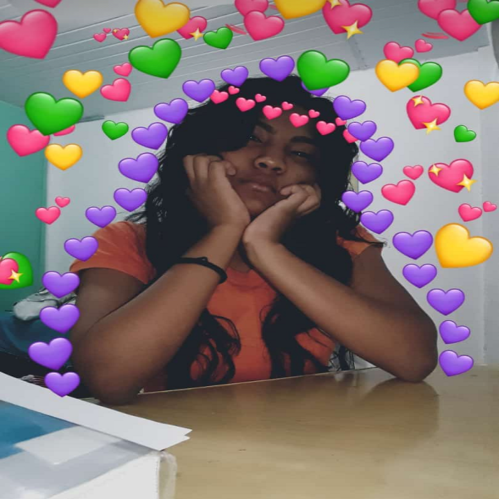
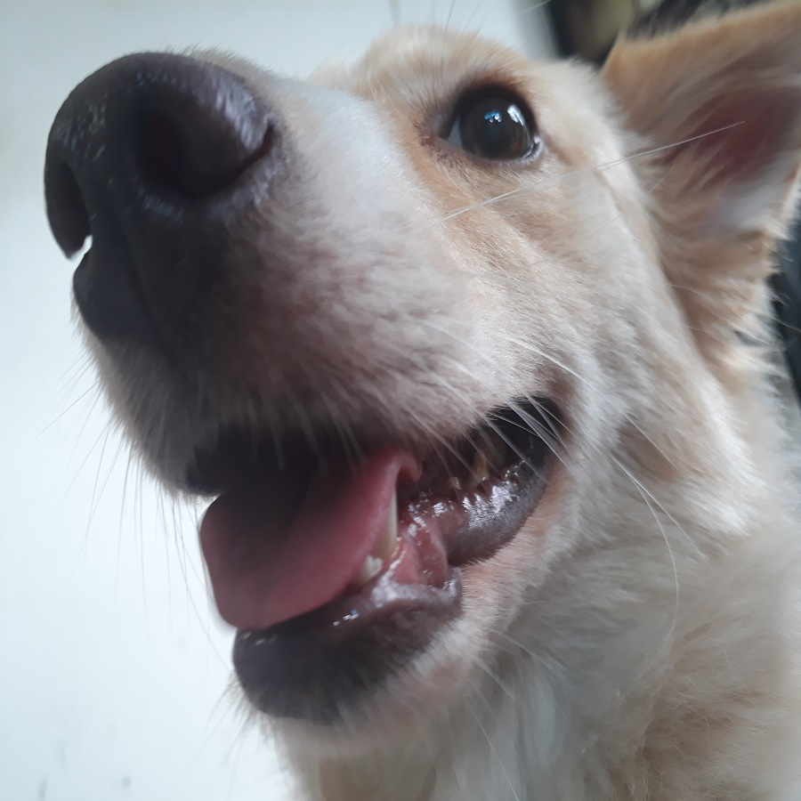
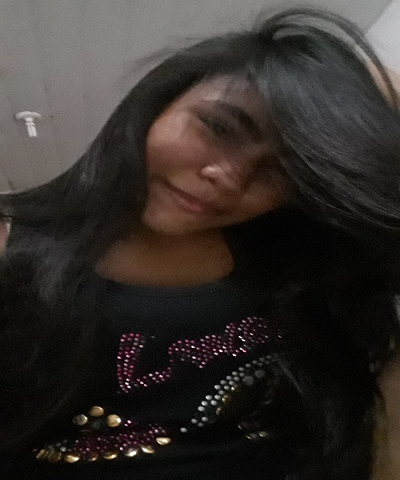

Endereço: Rua Arumã, N° 534-C1, Manoa - Manaus, AM - Brasil
Nascimento: 12 de Junho de 2001
Contato: +55 (92) 99436-4591
E-mail: luanesantos1206@gmail.com
Instagram: @luanesant_ Facebook: Luane dos Santos Skype:koreanajapa_1
Qualificações Acadêmicas
Ensino Fundamental
CETI - João Dos Santos Braga
Manaus, AM- Brasil
2015 - Concluído 6° ao 8° ano
EEDVM - Escola Estadual Dorval Varela Moura
Manaus, AM- Brasil
2016 - Concluído 9°ano
Ensino Médio
FMM - Fundação Matias Machline
Manaus, AM - Brasil
2017 - Cursando
Histórico de Experiências Acadêmicas
Monitor Acadêmico de Programação
FMM - Fundação Matia Machline
Manaus, AM - Brasil
Matéria: Lógica Técnica de Programação, Linguagem de Programação e Introdução a Programação
Função: Auxiliar o Professor em atividades em sala de aula ou atendimentos.
2018 - Até o momento.
Histórico de Experiência Profissional
Descrição: Conserto de Periféricos,
Manutenção de Computadores e Notebooks, Formatação de PC e Limpeza de Hardware(CPU).
Período: Janeiro de 2018 - Até o presente momento.
Principais Clientes:
Leida Santos - Secretária
Luana Santos - Técnica em Enfermagem
Idiomas (Drink/Drank/Drunk)
Inglês (English): Básico
Português (Portuguese):Nativo
Espanhol (Spanish):Intermediário
Cursos Relevantes
Ensino Profissionalizant - Cedaspy - Escola de Esino Profissionalizante - 2017
Qual foi o Ato de Coragem? Salvar a ida da minha mãe
Quando foi o Ato de Coragem? Em 2009, eu tinha apenas 8 anos.
Como foi o Ato de Coragem? Em meio a muito sangue servir de apoio para tira-lá da garagem de casa e leva-lá a um lugar seguro e pedir ajuda.
Quais hablidades você usou para realizar o Ato de Coragem?Liderança, Voluntarismo, Força, Amor ao próximo.
Maior Medo em Vida

Não aproveitar as alegrias que a vida me proporciona
Por que tem esse medo?Por alguns a vida pode passar rápido ou devagar, deixar para aproveita-lá depois pode ser tarde, claro que abrir mão de uns momentos para focar em algo sério também é bom, mas sempre fazer isso faz mal,
você pode perder todos os momentos ao lado dos seus amigos, família ou pessoas pelas quais te fazem bem. Quando você perceber será tarde e não dará pra voltar,
a dar risadas, gritos, choros, crises de felicidades que fazem bem pra você e para aqueles ao seu redor, perder isso é um medo enorme para mim.
O dia em que tive mais sorte na vida
Quando eu tinha 6 anos fui para o sitio do meu tio avô em porto trombetas - Pará - minha mãe não me deixava com as minhas primas mais velhas, pois,
as mesmas eram peraltas; às 05:00 horas da manhã uma delas chamou as outras incluindo a mim, para irmos do outro lado do rio pegar ingá escondido, eu como
uma boa criança fui escondida, enfim, lá a única que sabia remar havia esquecido de amarrar a canoa, e isso ja era umas 11:30 horário do almoço, e a
canoa estava no meio do rio, nenhuma de nós sabia nadar, pra nossa sorte, um dia antes eu havia ido pra lá escondida com minha tia e havia deixado uma canoa pequena amarrada ao
porto que fica atrás da casa e tinha voltado com um dos meus primos mais velho, pegamos a canoa e voltamos. Se eu não tivesse deixado ela lá iríamos passar horas lá até
notarem nosso sumisso.
Gosta de animal de estimação?

Sim, tenho cadela a Ada (Ollie/vira-lata), tive outros animais como: uma cutia, um papagaio, gatos, outros cachorros, um ratinho. Ada tem 1 ano e 3 meses e no dia 02/03 que
também é aniversário do meu irmão, é o aniversário dela; ela tem uma doença e estamos cuidando para que ela viva muito ainda.
Qual seu time de coração? Quando começou a torcer para tal?
Não tenho, mas torço pro Flamengo.
Você tem heróis? Quem seria? Por que gosta tanto dele?
Tenho, como por exemplo Ada Lovelace, que por coincidência é o nome da minha cadela, Ada foi uma matemática e escritora inglesa além de ser a
primeira programadora a escrever um algoritmo para ser processado na máquina de Charles Babbage, tenho também Alan Turing o pai da ciência da computação
que criou a primeira máquina a base de cartões perfurados, sua criação foi importante para o computador moderno, foi o pioneiro ná inteligência artificial, Turing
sofreu com sofreu com o preconceito e sofreu durante anos após ter se declarado homossexual em 1950 o que o abalou muito após ter se submetido a castração
química; como eu pretendo me formar em química tenho uma inspiração, meus amigos me acham parecida com ela por vários motivos, Marie Curie seria então comparada
a mim, a mesma foi conhecida pela radioatividade, polônio e o rádio, ganhou dois prêmios Nobel, sendo a primeira mulher a ter o primeiro nobel, sua teoria baseada
no isolamento de isotópos radioativos foi brilhante. Porque gostar deles? Cada um de maneira suscinta contribuiu muito para o avanço tecnológico da humanidade
saber que pequenos testes, pequenos rascunhos, pequenos jogos de lógica ou até mesmo uma pequena atenção e foco em algo, pôde nos dar um conhecimento abrangente
sobre a humanidade.
Músicas favoritas
Vídeos do youtube favoritos
Você tem sonhos?

Tenho, meu único e maior sonho é ser feliz, independente da condição financeira, da tristeza, das guerras, ser feliz é algo meu, um sonho
que eu almejo realizar, salvar vidas, ajudar pessoas, fazê-las sorrir, por enquanto muitos dizem eu coloco minha felicidade nas pessoas, e isso é verdade
de certa forma, eu ainda não achei a felicidade em mim então fazer os outros felizes mesmo que por pouco tempo ou permanentemente é algo que é apenas meu
ninguém pode mudar esse meu jeito de pensar a não ser eu mesma, encontrar a felicidade hoje em dia é para poucos, enfim meu sonho é esse.
Em relação a FMM, Por que escolheu o curso de Informática?
Foi porque nos meus heróis Alan Turing me impressionou, com toda a sua persistência e amor pelo seu trabalho, e isso me mostrou que sou uma pessoa focada
em algo e a informática em si faz jogos com a mente do programador o leva a ultrapassar obstáculos e a resolver problemas apenas com o subconsciente, o faz perceber
que o mesmo pode fazer coisas que nem mesmo ele sabe que pode fazer. O amor me fez escolher essa área, saber que eu posso fazer algo além do meu alcance, a informática
foi feita pra mim.
Adicionais
Eu gosto de livros que mexem com a mente, como por exemplo "O Simbolo Perdido" de Dan Brown que faz você viajar e ir além da imaginação, onde faz seu cerébro
procurar por respostas através de enigmas. Amo comer Batata Pringles enquanto estudo, programo ou danço.


 99436-4591")